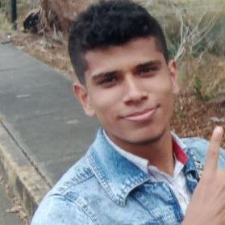

Raúl Alejandro Oca De Palma
12 de Noviembre del 2002. ♏
Nro. de Tlfno: 0424-3611589 ✆ C.I: V-29.858.304
CURRICULUM VITAE
DATOS PERSONALES
Género:
Masculino.
Edad:
19 años.
Cédula de Identidad:
V-29.858.304
R.I.F:
V-298583042
Fecha de Nacimiento
12 de Noviembre, 2002.
Lugar de Nacimiento
Maracay, Edo. Aragua.
Nacionalidad:
Venezolano.
Tipo Sanguineo:
ORH-
Estado Civil:
Soltero. ✌
Dirección:
Edo. Guárico, San Juan de los Morros; Urb. Altos de Fenix II. Calle-03, Casa D-24.
Indicador Myers-Briggs:
ENFJ / ESFJ.
Eneagrama:
2w3
Correos Electrónicos:
raulaocad@gmail.com ✉ / raulaocad@hotmail.com ✉
EDUCACIÓN
Educación Inicial:
Aprobación etapa inicial, 2007-2008. Pre-Escolar Asistencial "Virgen de las Nieves".
Educación Básica:
Aprobación de sexto grado, 2014. E.B.N. "Dr. Vicente Peña".
Educación Media General:
Bachiller en Ciencias. U.E.N "Rafael Cabrera Malo." 2019.
Estudios de Pregrado:
Cursante del VI Semestre de Ingeniéría de Sistemas. U.N.E. "Rómulo Gallegos". (Actual)
Otros Estudios:
Teoria-Solfeo-Teclado:
Escuela de Música "Juan Vicente Gutierrez". San Juan de los Morros. 2015.
Música(Cátedra Piano):
Escuela de Música "Ángel Briceño". Villa de Cura, Edo. Aragua. (Actual)
TALLERES Y/O ACTIVIDADES REALIZADAS
Certificate of Rank:
Japan Karate-Do Internacional 9no Kyu. San Juan de los Morros. Julio 2010.
Certificate of Rank:
Japan Karate-Do Internacional 8vo Kyu. San Juan de los Morros. Diciembre 2010
Certificate of Rank:
Japan Karate-Do Internacional 7mo Kyu. San Juan de los Morros. Julio 2011
DIPLOMAS Y/O RECONOCIMIENTOS
Diploma:
Participación en la Olimpiadas Matemáticas. San Juan de los Morros, Guárico. 2011.
Reconocimiento:
Participción en el "Programa Reciclar es Educar". San Juan de los Morros, Guárico. 2012-2013.
Diploma:
Participación en la Olimpiada Matemáticas. San Juan de los Morros, Guárico. 2014.
Reconocimiento:
1era Muestra Musical "Talentos de mi Pueblo". Villa de Cura, Aragua. 2016.
Reconocimiento:
Destacada colaboración como Pianista en Acto Académico IX Promoción de Bachilleres. Villa de Cura, Aragua. 2017.
Reconocimiento:
Participación como Relator en el I Encuentro de Cronistas Institucional RCM. San Juan de los Morros, Guárico. 2018.
Reconocimiento:
Participación como ponente en el IV Congreso Pedagógico Estadal. San Juan de los Morros, Guárico. 2018.
Reconocimiento:
Décimo Índice Académico en la XIII Promoción de Bachilleres. San Juan de los Morros, Guárico. 2019.
Diploma:
Participación en la Olimpiada Matemática 2019. San Juan de los Morros, Guárico. 2019.
DOMINIO DE IDIOMAS
99.95% de Español.
Idioma Natal. ⋆
8% de Ingles.
En Aprendizaje.
5% de Italiano.
En Aprendizaje.
HOBBIES ☯
Tocar el Piano. ♪
Oir Distintos Generos Musicales.
(Rock, Clásica, Jazz, entre otros.) ♪
Videojuegos
EXPERIENCIA LABORAL
Asistente de Albañil. 👍
Experiencia con NFT's. 👍
Experiencia en labores de Microtrabjajos Online
Delivery en la pasteleria "Arrullo's Cake". 👍
Villa de Cura, Edo. Aragua.
Trabajador en la Agencia de Festejos, "A mi Estilo Fácil".
Integrante del grupo musical "TheParadise" cumpliendo el rol de Pianista.
EXPERIENCIA COMO PROGRAMADOR
Principalmente la propia elaboracion de este Curriculum que para mi es un trabajo satisfactorio de haber realizado y quiero que en un futuro se convierta en mi Curriculum Oficial
Cursando la materia de Programacion II tambien elabore un prototipo de pagina que se encargaba de almacenar y registrar bebidas en un local. No a sido uno de mis mejores trabajos pero es de los que pienso que vale la pena mencionar. Aun asi estoy orgulloso de mi resultado final con ese trabajo.
Otros de mis proyectos o actividades programando fueron cursando la materia Electiva V "Desarrollo de Videojuegos" Donde aprendi a usar el motor de LOVE2D y a manejar lo básico del lenguaje "lua". Hablo de varios proyectos en plural porque realmente elabora varios juegos... pero puedo destacar 3 que por mi parte estuve muy conforme con el resultado final.
El Primero: Es un juego tipo Asteroids. Donde se debe de esquivar obstaculos que rebotan por toda la pantalla
El Segundo: Es literalmente un Juego de PONG
El Tercero: Es mas un juego tipo, El Dinosaurio de Google.
REFERENCIAS PERSONALES
👍 Enmariel de la Caridad Vargas Rodriguez ╍ enmariel.v.r@gmail.com ✉ ╍ C.I: V-29.671.774 ╍ 0412-2735841 ✆
👍 Maria Teresa Machado Perdomo ╍ C.I: V-10.669.360 ╍ 0412-0368464 ✆